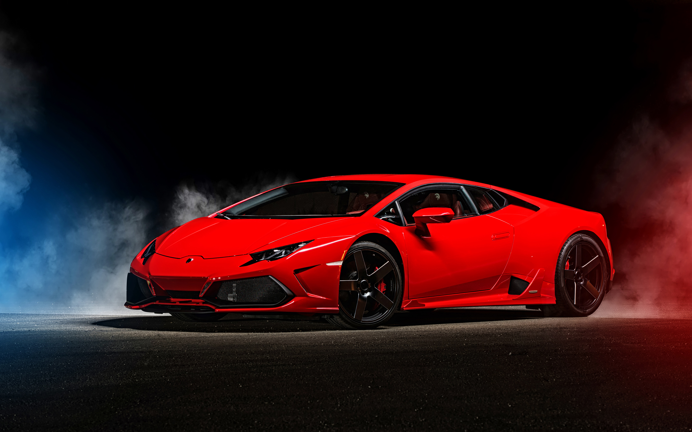

|  Founded in 1963, Automobili Lamborghini is headquartered in Sant’Agata Bolognese, in Northern Italy. The Lamborghini Huracán, which made its world debut at the Geneva Motor Show in 2014, in the Huracán Spyder and rear wheel-drive version released in 2015, are the successors to the iconic Gallardo. With their innovative technology and exceptional performance, they redefine the driving experience for luxury super sports cars. The Coupé and Roadster versions of the Aventador and the Aventador Superveloce are the new benchmark in the world of luxury super sports cars with V12 engine. With 135 dealerships throughout the world, Automobili Lamborghini has created a continuous series of dream cars over half a century that include the 350 GT, Miura, Espada, Countach, Diablo and Murciélago, as well as limited editions such as the Reventón, Sesto Elemento and Aventador J. The Veneno Coupé, Egoista and Veneno Roadster were produced to celebrate the company's 50th anniversary in 2013, while the Centenario pays tribute to the 100th anniversary of the birth of founder Ferruccio Lamborghini in 2016. |